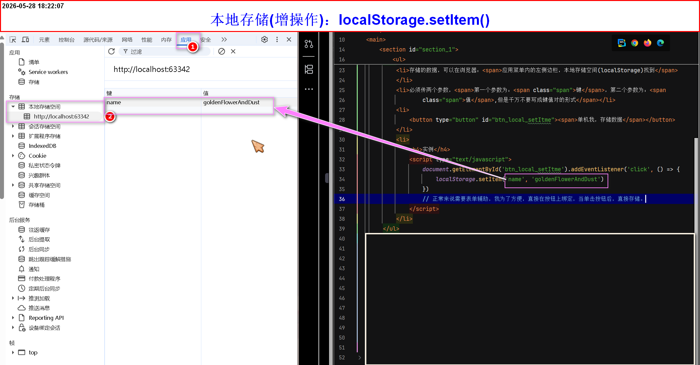
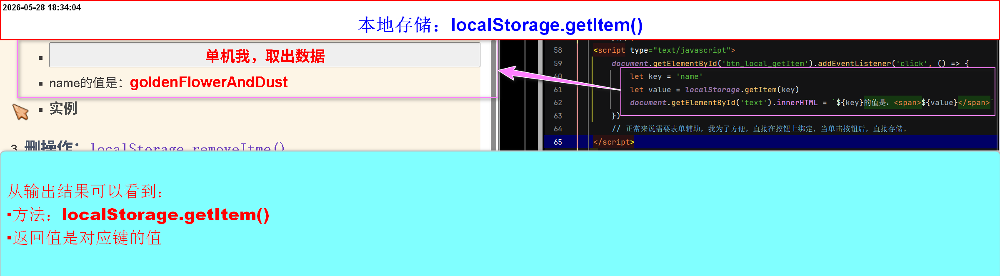
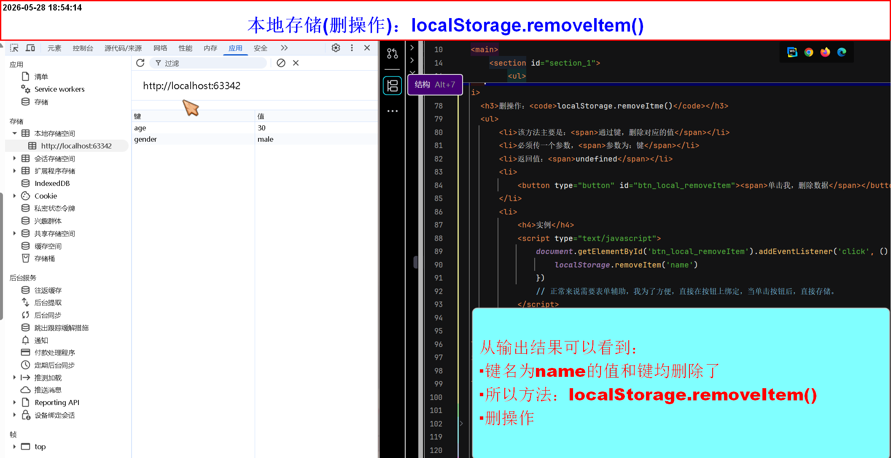
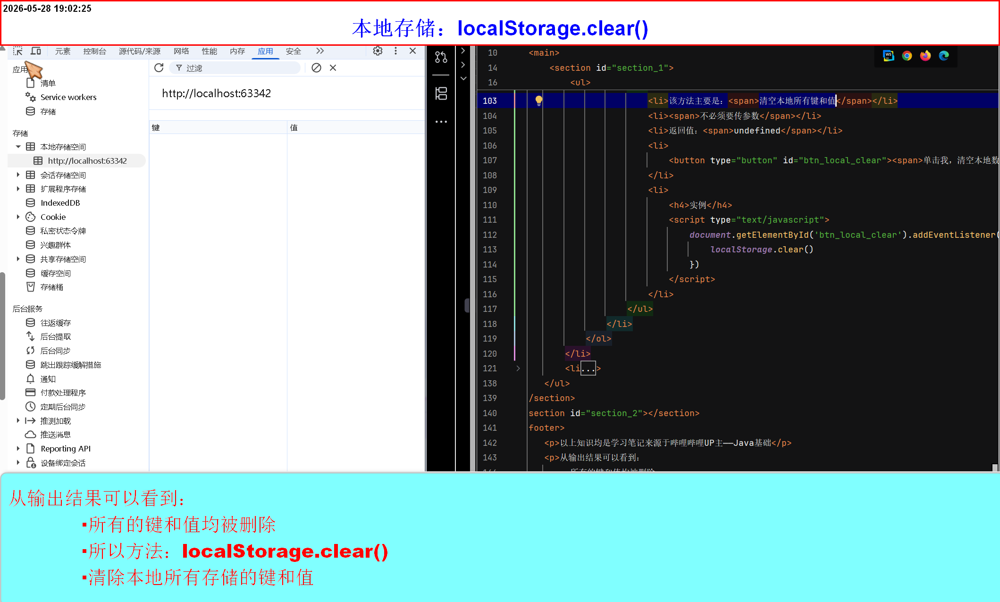

浏览器本地存储
本地存储
-
localStorage(永久存储)
-
增操作：
localStorage.setItem()- 存储的数据，可以在浏览器：应用菜单内的左侧边栏，本地存储空间(localStorage)找到
- 必须传两个参数，第一个参数为：键，第二个参数为：值,但是千万不要写成键值对的形式
- 注意：该方式存储的只能本地且本设备，才能看到，对应的键和值，其他地方看不到
- 返回值：undefined
- 只能存储：
String类型其他类型会被强制转换成字符串类型(如：Arary、object、function、()=>{}、Number、Boolean....) 对象可通过方法：JSON.stringify()将对象转换成字符串类型 - 相同的键，后者的值会覆盖前面的值,这也就引出了改操作
-
实例

-
取操作：
localStorage.getItem()- 该方法主要是：通过键，取出对应的值
- 必须传一个参数，参数为：键
- 返回值是：键对应的值
- 当取的键不存在时：返回值是：null
-
当获取的值是：JSON字符串的时候，可以通过方法：
JSON.parse()转成对象 -
实例

-
删操作：
localStorage.removeItem()- 该方法主要是：通过键，删除对应的值
- 必须传一个参数，参数为：键
- 返回值：undefined
-
实例

-
清空操作：
localStorage.clear()- 该方法主要是：清空本地所有键和值
- 不需要传参数
- 返回值：undefined
-
实例

-
-
sessionStorage(暂时存储(关闭网页及丢失))
- 增、改、取、删、清空操作与localStorage一致(包括注意事项)
- 区别就是：开发者查看的位置不同(应用菜单内的左侧边栏，会话存储空间(sessionStorage)找到)
- 还有一个区别就是：本地存储(
localStorage)是永久存储(只要不删除浏览器、重装系统)、 而会话存储(sessionStorage)，关闭页面就丢失 -
增操作：
sessionStorage.setItem()- 改操作：同样是重新赋值即可
- 同样是：只能才能出字符串类型
-
取操作：
sessionStorage.getItem()- 返回值：同样是对应的值
- 若键不存在，则返回值为
null
-
删操作：
sessionStorage.removeItem() -
清空操作：
sessionStorage.clear()